Путь при равномерном движении:
Средняя скорость пути:
Средняя скорость перемещения:
Определение ускорения при равноускоренном движении:

Выразив из формулы выше конечную скорость, получаем более распространённый вид предыдущей
формулы, которая теперь выражает зависимость скорости от времени при равноускоренном движении:
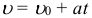
Средняя скорость при равноускоренном движении:

Перемещение при равноускоренном прямолинейном движении может быть рассчитано по нескольким формулам:

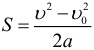

Координата при равноускоренном движении изменяется по закону:

Проекция скорости при равноускоренном движении изменяется по такому закону:
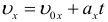
Скорость, с которой упадет тело падающее с высоты h без начальной скорости:

Время падения тела с высоты h без начальной скорости:

Максимальная высота на которую поднимется тело, брошенное вертикально вверх с начальной скоростью v0, время подъема этого тела на максимальную высоту, и полное время полета (до возвращения в исходную точку):

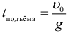

Формула для тормозного пути тела:
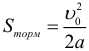
Время падения тела при горизонтальном броске с высоты H может быть найдено по формуле:
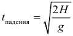
Дальность полета тела при горизонтальном броске с высоты H:
Полная скорость в произвольный момент времени при горизонтальном броске, и угол наклона скорости к горизонту:
Максимальная высота подъема при броске под углом к горизонту (относительно начального уровня):
Время подъема до максимальной высоты при броске под углом к горизонту:
Дальность полета и полное время полета тела брошенного под углом к горизонту (при условии, что полет заканчивается на той же высоте с которой начался, т.е. тело бросали, например, с земли на землю):
Определение периода вращения при равномерном движении по окружности:

Определение частоты вращения при равномерном движении по окружности:
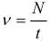
Связь периода и частоты:
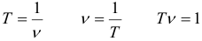
Линейная скорость при равномерном движении по окружности может быть найдена по формулам:

Угловая скорость вращения при равномерном движении по окружности:

Связь линейной и скорости и угловой скорости выражается формулой:
Связь угла поворота и пути при равномерном движении по окружности радиусом R (фактически, это просто формула для длины дуги из геометрии):

Центростремительное ускорение находится по одной из формул:

Динамика
Второй закон Ньютона:
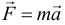
Здесь: F - равнодействующая сила, которая равна сумме всех сил действующих на тело:
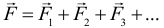
Второй закон Ньютона в проекциях на оси (именно такая форма записи чаще всего и применяется на практике):
Третий закон Ньютона (сила действия равна силе противодействия):

Сила упругости:
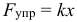
Общий коэффициент жесткости параллельно соединённых пружин:

Общий коэффициент жесткости последовательно соединённых пружин:

Сила трения скольжения (или максимальное значение силы трения покоя):
Закон всемирного тяготения:
Если рассмотреть тело на поверхности планеты и ввести следующее обозначение:

Где: g - ускорение свободного падения на поверхности данной планеты, то получим следующую формулу для силы тяжести:

Ускорение свободного падения на некоторой высоте от поверхности планеты выражается формулой:

Скорость спутника на круговой орбит:
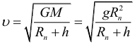
Первая космическая скорость:
Закон Кеплера для периодов обращения двух тел вращающихся вокруг одного притягивающего центра:
Статика
Момент силы определяется с помощью следующей формулы:

Условие при котором тело не будет вращаться:
Координата центра тяжести системы тел (аналогичные уравнения для остальных осей):
Гидростатика
Определение давления задаётся следующей формулой:
Давление, которое создает столб жидкости находится по формуле:
Но часто нужно учитывать еще и атмосферное давление, тогда формула для общего давления на некоторой глубине h в жидкости приобретает вид:

Идеальный гидравлический пресс:
Любой гидравлический пресс:
КПД для неидеального гидравлического пресса:
Сила Архимеда (выталкивающая сила, V - объем погруженной части тела):
Импульс
Импульс тела находится по следующей формуле:

Изменение импульса тела или системы тел (обратите внимание, что разность конечного и начального импульсов векторная):

Общий импульс системы тел (важно то, что сумма векторная):

Второй закон Ньютона в импульсной форме может быть записан в виде следующей формулы:

Закон сохранения импульса. Как следует из предыдущей формулы, в случае если на систему тел не действует внешних сил, либо действие внешних сил скомпенсировано (равнодействующая сила равна нолю), то изменение импульса равно нолю, что означает, что общий импульс системы сохраняется:
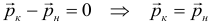
Если внешние силы не действуют только вдоль одной из осей, то сохраняется проекция импульса на данную ось, например:

Работа, мощность, энергия
Механическая работа рассчитывается по следующей формуле:

Самая общая формула для мощности (если мощность переменная, то по следующей формуле рассчитывается средняя мощность):

Мгновенная механическая мощность:

Коэффициент полезного действия (КПД) может быть рассчитан и через мощности и через работы

Формула для кинетической энергии:

Потенциальная энергия тела поднятого на высоту:
Потенциальная энергия растянутой (или сжатой) пружины:

Полная механическая энергия:

Связь полной механической энергии тела или системы тел и работы внешних сил:
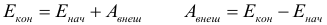
Закон сохранения механической энергии (далее – ЗСЭ). Как следует из предыдущей формулы, если внешние силы не совершают работы над телом (или системой тел), то его (их) общая полная механическая энергия остается постоянной, при этом энергия может перетекать из одного вида в другой (из кинетической в потенциальную или наоборот):

Молекулярная физика
Химическое количество вещества находится по одной из формул:

Масса одной молекулы вещества может быть найдена по следующей формуле:

Связь массы, плотности и объёма:
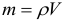
Основное уравнение молекулярно-кинетической теории (МКТ) идеального газа:

Определение концентрации задаётся следующей формулой:

Для средней квадратичной скорости молекул имеется две формулы:

Средняя кинетическая энергия поступательного движения одной молекулы:

Постоянная Больцмана, постоянная Авогадро и универсальная газовая постоянная связаны следующим образом:
Следствия из основного уравнения МКТ:

Уравнение состояния идеального газа (уравнение Клапейрона-Менделеева):

Газовые законы. Закон Бойля-Мариотта:
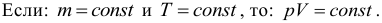
Закон Гей-Люссака:
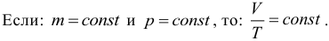
Закон Шарля:

Универсальный газовый закон (Клапейрона):
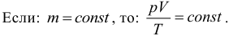
Давление смеси газов (закон Дальтона):
Тепловое расширение тел. Тепловое расширение газов описывается законом Гей-Люссака. Тепловое расширение жидкостей подчиняется следующему закону:

Для расширения твердых тел применяются три формулы, описывающие изменение линейных размеров, площади и объема тела:

Термодинамика
Количество теплоты (энергии) необходимое для нагревания некоторого тела (или количество теплоты выделяющееся при остывании тела) рассчитывается по формуле:
Теплоемкость (С - большое) тела может быть рассчитана через удельную теплоёмкость (c - маленькое) вещества и массу тела по следующей формуле:

Тогда формула для количества теплоты необходимой для нагревания тела, либо выделившейся при остывании тела может быть переписана следующим образом:

Фазовые превращения. При парообразовании поглощается, а при конденсации выделяется количество теплоты равное:

При плавлении поглощается, а при кристаллизации выделяется количество теплоты равное:

При сгорании топлива выделяется количество теплоты равное:
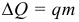
Работа идеального газа:
Если же давление газа меняется, то работу газа считают, как площадь фигуры под графиком в p–V координатах. Внутренняя энергия идеального одноатомного газа:

Изменение внутренней энергии рассчитывается по формуле:

Первый закон (первое начало) термодинамики (ЗСЭ):

Для различных изопроцессов можно выписать формулы по которым могут быть рассчитаны полученная теплота Q, изменение внутренней энергии ΔU и работа газа A. Изохорный процесс (V = const):

Изобарный процесс (p = const):

Изотермический процесс (T = const):

КПД тепловой машины может быть рассчитан по формуле:

Где: Q1 – количество теплоты полученное рабочим телом за один цикл от нагревателя, Q2 – количество теплоты переданное рабочим телом за один цикл холодильнику. Работа совершенная тепловой машиной за один цикл:

Наибольший КПД при заданных температурах нагревателя T1 и холодильника T2, достигается если тепловая машина работает по циклу Карно. Этот КПД цикла Карно равен:

Абсолютная влажность рассчитывается как плотность водяных паров (из уравнения Клапейрона-Менделеева выражается отношение массы к объему и получается следующая формула):

Относительная влажность воздуха может быть рассчитана по следующим формулам:

Электростатика
Электрический заряд может быть найден по формуле:

Закон Кулона (сила электростатического взаимодействия двух электрических зарядов):

Где: k - некоторый постоянный электростатический коэффициент, который определяется следующим образом:

Напряжённость электрического поля находится по формуле (хотя чаще эту формулу используют для нахождения силы действующей на заряд в данном электрическом поле):

Принцип суперпозиции для электрических полей (результирующее электрическое поле равно векторной сумме электрических полей составляющих его):

Напряженность электрического поля, которую создает заряд Q на расстоянии r от своего центра:

Потенциальная энергия взаимодействия двух электрических зарядов выражается формулой:

Электрическое напряжение это просто разность потенциалов, т.е. определение электрического напряжения может быть задано формулой:

Работа электрического поля может быть вычислена как разность начальной и конечной потенциальной энергии системы зарядов:

Работа электрического поля в общем случае может быть вычислена также и по одной из формул:

Определение потенциала задаётся выражением:

Принцип суперпозиции для электрического потенциала (результирующий потенциал равен скалярной сумме потенциалов полей составляющих итоговое поле):

Определение электрической ёмкости задаётся формулой:

Ёмкость плоского конденсатора:

Заряд конденсатора:

Сила притяжения пластин плоского конденсатора:

Энергия конденсатора (вообще говоря, это энергия электрического поля внутри конденсатора):

Объёмная плотность энергии электрического поля:

Электрический ток
Сила тока может быть найдена с помощью формулы:

Сопротивление проводника:

Закон Ома:

Закономерности последовательного соединения:

Закономерности параллельного соединения:

Электродвижущая сила источника тока (ЭДС) определяется с помощью следующей формулы:

Закон Ома для полной цепи:

Падение напряжения во внешней цепи при этом равно (его еще называют напряжением на клеммах источника):

Сила тока короткого замыкания:

Работа электрического тока (закон Джоуля-Ленца). Работа А электрического тока протекающего по проводнику обладающему сопротивлением преобразуется в теплоту Q выделяющуюся на проводнике:

Мощность электрического тока:

Магнетизм
Сила Ампера, действующая на проводник с током помещённый в однородное магнитное поле, рассчитывается по формуле:

Момент сил действующих на рамку с током:

Сила Лоренца, действующая на заряженную частицу движущуюся в однородном магнитном поле, рассчитывается по формуле:

Магнитным потоком Φ через площадь S контура называют величину заданную формулой:

ЭДС индукции рассчитывается по формуле:

Связь индуктивности катушки, силы тока протекающего через неё и собственного магнитного потока пронизывающего её, задаётся формулой:

ЭДС самоиндукции возникающая в катушке:

Энергия катушки (вообще говоря, это энергия магнитного поля внутри катушки):

Колебания
Уравнение описывающее физические системы способные совершать гармонические колебания с циклической частотой ω0:

Решение предыдущего уравнения является уравнением движения для гармонических колебаний и имеет вид:

Период колебаний вычисляется по формуле:

Частота колебаний:

Циклическая частота колебаний:

Зависимость скорости от времени при гармонических механических колебаниях выражается следующей формулой:

Максимальное значение скорости при гармонических механических колебаниях:

Зависимость ускорения от времени при гармонических механических колебаниях:

Максимальное значение ускорения при механических гармонических колебаниях:

Циклическая частота колебаний математического маятника рассчитывается по формуле:

Период колебаний математического маятника:

Циклическая частота колебаний пружинного маятника:

Период колебаний пружинного маятника:

Максимальное значение кинетической энергии при механических гармонических колебаниях задаётся формулой:

Максимальное значение потенциальной энергии при механических гармонических колебаниях пружинного маятника:

Взаимосвязь энергетических характеристик механического колебательного процесса:

Энергетические характеристики и их взаимосвязь при колебаниях в электрическом контуре:

Период гармонических колебаний в электрическом колебательном контуре определяется по формуле:

Циклическая частота колебаний в электрическом колебательном контуре:

Трансформатор
Если напряжение на входе в трансформатор равно U1, а на выходе U2, при этом число витков в первичной обмотке равно n1, а во вторичной n2, то выполняется следующее соотношение:

Коэффициент трансформации вычисляется по формуле:

Если трансформатор идеальный, то выполняется следующее соотношение (мощности на входе и выходе равны):

В неидеальном трансформаторе вводится понятие КПД:

Оптика
Оптическая длина пути определяется формулой:

Формула дифракционной решетки:

Закон преломления света на границе двух прозрачных сред:

Постоянную величину n21 называют относительным показателем преломления второй среды относительно первой. Если n1 > n2, то возможно явление полного внутреннего отражения, при этом:

Формула тонкой линзы:

Линейным увеличением линзы Γ называют отношение линейных размеров изображения и предмета:

Раввномерное движени по окружности
В качестве дополнения, в таблице ниже приводим всевозможные взаимосвязи между характеристиками тела равномерно вращающегося по окружности (T – период, N – количество оборотов, v – частота, R – радиус окружности, ω – угловая скорость, φ – угол поворота (в радианах), υ – линейная скорость тела, an – центростремительное ускорение, L – длина дуги окружности, t – время):